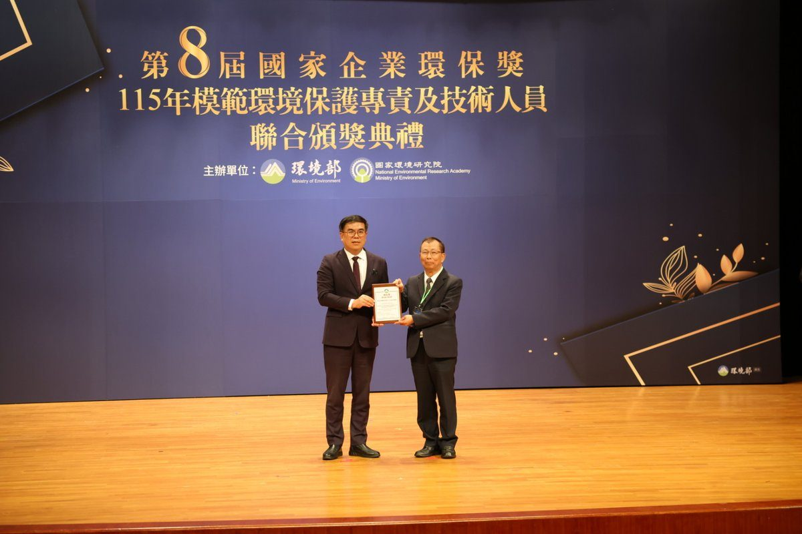

花蓮慈院首奪國家環保獎！廢塑膠回收率冠全國 打造綠色醫療典範

可樂電子報小編/編輯
賀！首次參賽就奪獎 花蓮慈院榮獲環境部國家企業環保獎銅級獎肯定

環境部11月2日舉辦「第8屆國家企業環保獎」頒獎典禮，首次參與評選的花蓮慈濟醫院，榮獲非製造業組「銅級獎」；並獲總統賴清德接見與勗勉副院長吳彬安指出，花蓮慈濟醫院自啟業以來，秉持證嚴上人的環保理念，落實在醫療照護與院務管理，這次獲得國家企業環保獎的肯定，也是花蓮慈院推動綠色醫療重要的裡程碑。

副院長吳彬安表示，感恩全院同仁與志工的長年投入，這座獎項凝聚了醫院多年來在節能、廢水與醫療廢棄物回收等實質成效，證明看似簡單的資源回收與珍惜物資等作為，持之以恆就能產生巨大的環保能量。

副院長吳彬安指出，根據臺灣25家醫學中心於2024年度評比資料，花蓮慈院「廢塑膠再利用率」達67.0%，高於醫學中心同年度平均值17.7%，為同業平均的3.8倍，卓越績效位居全臺之冠。回收醫療塑膠廢棄物達100公噸，估計年減碳量超過175公噸 CO₂e，其中，更與合作單位開發，將回收資源製作成環保原子筆、按摩球與針筒收集盒等產品，再循環回到醫療場域。

在能源及水資源方面，花蓮慈院落實ISO 50001能源管理系統及ISO14064-1溫室氣體盤查；針對冰水主機汰換、電熱式鍋爐導入、LED燈具汰換及汙水納管等推動4項核心節能專案，並於2025年年度總節電量成長了72.99％，其中冰水主機汰換後，節能率就達到36.4％。而水資源方面，把雨水回收整合到綠地澆灌，將RO純水製成的水再利用到院內清潔，統計2025年度用水量較上一年下降9.67％，年雨水回收量來到530公噸，大幅降低醫療營運對於當地水資源的負荷。
在日常行政流程及生活方面，花蓮慈院整合電子簽核、電子表單及電子處方箋，推動數位無紙化；為了實踐低碳生活，自啟業以來提供同仁平價低碳蔬食，目前是早餐15元，午、晚餐25元，月供餐量達到3萬人次。其間定期發起二手圖書、教具、衣物等資源募集，透過分類整理後送到偏鄉及弱勢機構，延伸物資第二生命。
交通方面，與臺灣鐵路公司合作推動「行動車站 2.0」，將花蓮車站購票、退票及接駁諮詢延伸至院內，全面降低長者及行動不便病患往返車站的不便與碳排。 副院長吳彬安強調，首次參賽能獲得國家企業環保獎，是對於長期推動並參與環境永續的所有醫療及行政團隊是最高肯定；未來花蓮慈院將持續深耕ESG永續治理，實踐守護東臺灣健康與守護地球環境的雙重承諾。
🌟 掌握花蓮在地第一手資訊・歡迎訂閱追蹤
深度紀實報導、在地精采影音專題，第一時間接收最新消息！